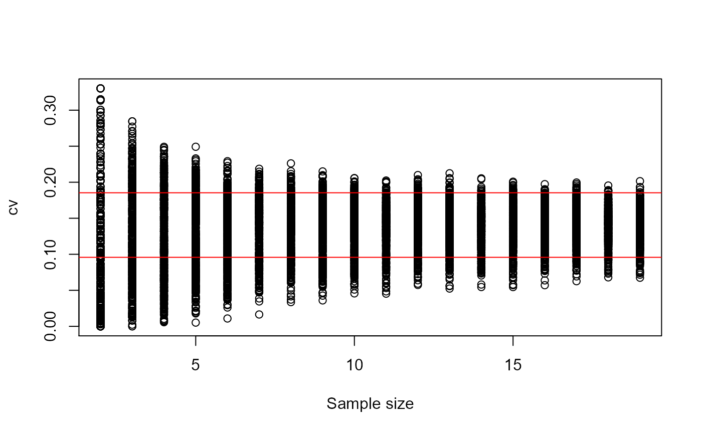

samplesize.RdFunction to determine the minimum sample size for calculating a statistic based on its the confidence interval.
samplesize(x, fun, sizes = NULL, lcl = NULL, ucl = NULL, nboot = 200, conf.level = 0.95, nrep = 500, graph = TRUE, ...)
| x | a numeric vector. |
|---|---|
| fun | an objective function at which to evaluate the sample size; see details. |
| sizes | a numeric vector containing sample sizes; if |
| lcl | the lower confidence limit for the statistic defined in |
| ucl | the upper confidence limit for the statistic defined in |
| nboot | the number of bootstrap samples; it is used only if |
| conf.level | the confidence level for calculating the |
| nrep | the resampling (with replacement) number for each sample size in |
| graph | logical; default is |
| ... | further graphical arguments. |
If ucl or lcl is NULL, fun must be defined as in boot, i.e.,
the first argument passed will always be the original data and the second will be a vector of indices,
frequencies or weights which define the bootstrap sample. By now, samplesize considers the
second argument only as index.
A list of
a vector containing the lower and the upper confidence limit for the statistic evaluated.
a data frame containing the sample sizes (in sizes), the number of
points outside the CI (n.out) and the proportion of this number (prop).
If graph = TRUE, a graphic with the dispersion of the estimates for each sample size,
as well as the graphic containing the number of points outside the confidence interval for
the reference sample.
Anderson Rodrigo da Silva <anderson.agro@hotmail.com>
#> [1] 0.1489145samplesize(x, cv)#> $CI #> [1] 0.09578378 0.18537151 #> #> $pointsOut #> sizes n.out prop #> 1 2 367 0.734 #> 2 3 308 0.616 #> 3 4 275 0.550 #> 4 5 210 0.420 #> 5 6 180 0.360 #> 6 7 161 0.322 #> 7 8 113 0.226 #> 8 9 116 0.232 #> 9 10 102 0.204 #> 10 11 62 0.124 #> 11 12 61 0.122 #> 12 13 51 0.102 #> 13 14 44 0.088 #> 14 15 48 0.096 #> 15 16 38 0.076 #> 16 17 37 0.074 #> 17 18 29 0.058 #> 18 19 25 0.050 #> #> attr(,"class") #> [1] "samplesize"#> $CI #> [1] 0.05 0.20 #> #> $pointsOut #> sizes n.out prop #> 1 2 249 0.498 #> 2 3 164 0.328 #> 3 4 91 0.182 #> 4 5 59 0.118 #> 5 6 34 0.068 #> 6 7 28 0.056 #> 7 8 23 0.046 #> 8 9 13 0.026 #> 9 10 4 0.008 #> 10 11 3 0.006 #> 11 12 3 0.006 #> 12 13 1 0.002 #> 13 14 0 0.000 #> 14 15 1 0.002 #> 15 16 1 0.002 #> 16 17 0 0.000 #> 17 18 0 0.000 #> 18 19 0 0.000 #> #> attr(,"class") #> [1] "samplesize"# End (not run)